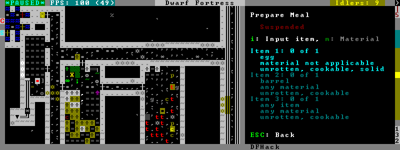
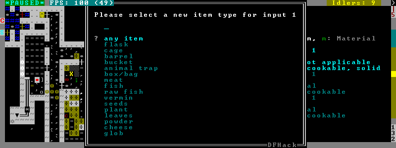
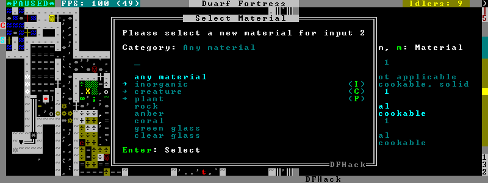

gui/workshop-job¶
This tool allows you to inspect or change the input reagents for the selected workshop job (in q mode).

Pressing i shows a dialog where you can select an item type from a list.

Pressing m (unless the item type does not allow a material) lets you choose a material.

Since there are a lot more materials than item types, this dialog is more complex and uses a hierarchy of sub-menus. List choices that open a sub-menu are marked with an arrow on the left.
Warning
Due to the way input reagent matching works in DF, you must select an item type if you select a material or the material may be matched incorrectly. If you press m without choosing an item type, the script will auto-choose if there is only one valid choice.
Note that the choices presented in the dialogs are constrained by the job input
flags. For example, if you choose a plant input item type for your prepare
meal job, it will only let you select cookable plants since the job reagent
has the cookable trait.
As another example, if you choose a barrel item for your prepare meal
job (meaning things stored in barrels, like drink or milk), it will let you
select any material that barrels can be made out of, since in this case the
material is matched against the barrel itself. Then, if you select, say,
iron, and then try to change the input item type, it won’t let you select
plant because plants cannot be made of iron – you have to unset the
material first.
Usage¶
gui/workshop-job